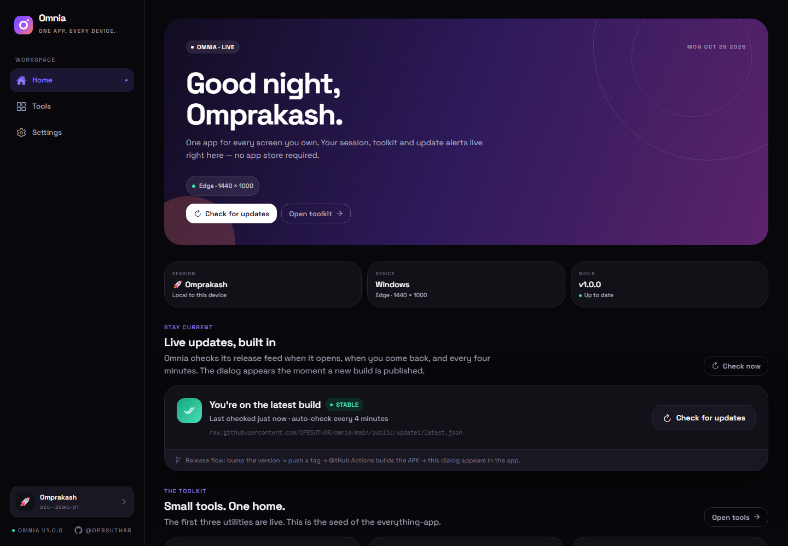
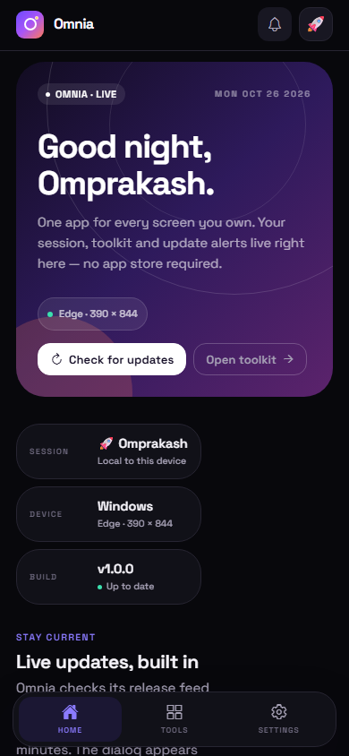

Android
Signed APK for Android 8 and newer. Direct install, no store.
Download APK ~98 MB · direct mirror, no sign-inOmnia is a local-first workspace with a focus timer, unit converter, scratchpad and live in-app updates. This page is the download and installation guide. The full app runs on Vercel.

Every installer is attached to the latest GitHub Release. Android builds install over the previous version, and desktop installers keep your local session.
Signed APK for Android 8 and newer. Direct install, no store.
Download APK ~98 MB · direct mirror, no sign-inA real desktop installer. Adds Omnia to the Start menu and your desktop.
Download .exe 64-bit installer · unsigned buildA portable AppImage. Download, make it executable, and run.
Download AppImage x86_64 AppImage · unsigned buildRun the full app in any modern browser. On iPhone, add it to your Home Screen.
Launch web app Always the newest deployed build
Android downloads are mirrored on this site, so they work even when your browser blocks
GitHub cookies or third-party sign-in. Windows and Linux builds are not code-signed yet.
Windows SmartScreen may ask you to choose More info → Run anyway. On
Linux, run chmod +x omnia-linux.AppImage once before launching.
omnia.apk.omnia-windows.exe.omnia-linux.AppImage.chmod +x omnia-linux.AppImage./omnia-linux.AppImage.
The same Expo + React Native codebase renders the phone app, the desktop app and the website. Layouts reflow from a 320 px phone to an ultrawide monitor.
When a release is published, Omnia compares the feed version with the installed build and shows the release notes. Android downloads the next APK; Windows and Linux download the next installer; the web app reloads the newest deployment.
Checking the latest published version…
The actual app is a full React application deployed on Vercel at omnia-suthara.vercel.app. This GitHub Pages site is deliberately static: it stays available even if the app host is down, and it is the canonical place for install steps and download links.